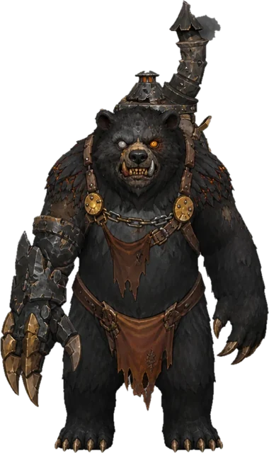
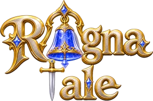
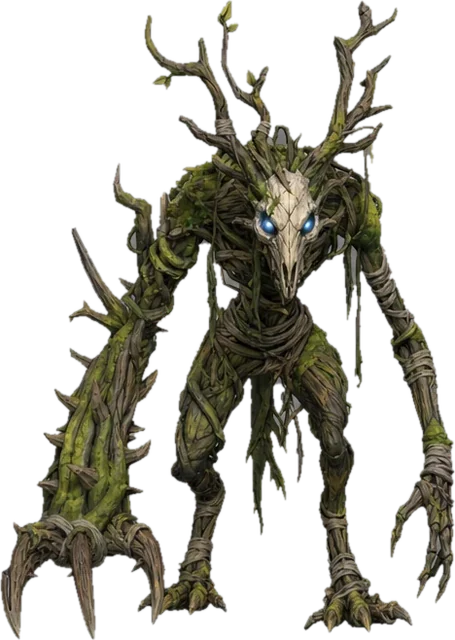
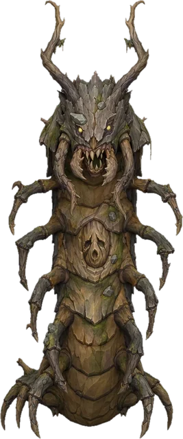
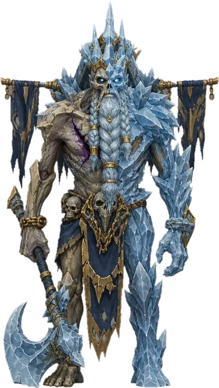
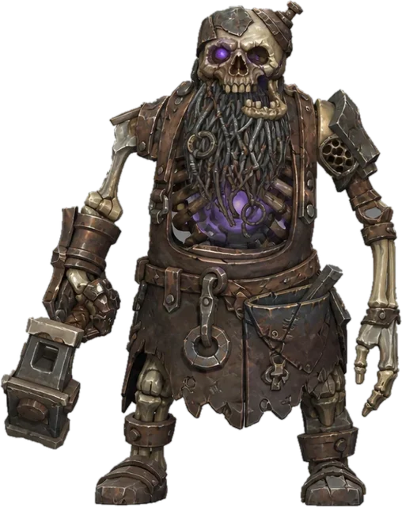

ChefeUrso-CarvoeiroBosque das Bétulas-CinzaBrasa
Dorme dentro do forno dos carvoeiros. Acorde-o por sua conta.


Bestiário
Uma amostra do que espera por você nos campos de Ermândia. O resto, você descobre caçando.
Criaturas

ChefeDorme dentro do forno dos carvoeiros. Acorde-o por sua conta.

Ainda reza, debaixo d'água. Ninguém sabe mais para quem.
 Chefe
ChefeLeva qualquer um para o outro lado. A volta não está no preço.

Fica imóvel até você passar. Depois, a mata inteira anda.

Casca por fora, fome por dentro. Ouve-se antes de se ver.

Jurou guardar um coro que já não canta. Continua de guarda.

Enterrado com o navio. Quando o gelo racha, ele sobe para cobrar.

O fole ainda sopra. Quem soprava, não.

Nasce onde o cristal encontra o fogo. Voa baixo, queima largo.

Morreu na bigorna e não largou o martelo.

Uma bigorna que cansou de apanhar.

O gelo o guardou inteiro. O cristal o acordou com raiva.
Em breveVale das Flores-Sino · Charneca dos Túmulos · Serra de Pedrabrota · Extremo norteMais de cem criaturas estão a caminho.